Here we go with the second part of the Caldera DeskTop review. If you are joining me late, you can still follow along, but you might want to read the January issue anyway. (Lots o' good stuff in it) I decided to change tatics and instead of jumping into the PrintTool and net configuration, I'm going start off with the 6 menu buttons found on all layouts. So, without further ado, I will jump right to .....
Show Ful Pathname Shows the full path to the file/application which is highlighted. Does not re-arrange the icons to accommodate the text
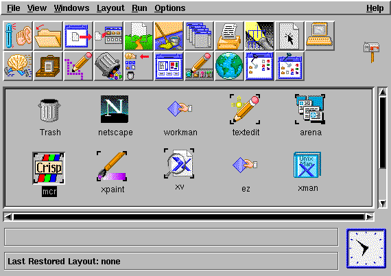
Show Status A status area is placed on the bottom of the main window.
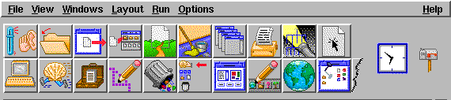
Show Clock Makes the built-in clock visible. If Show Status is enabled, the clock is re-positioned to the bottom of the main window.
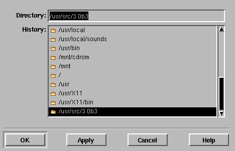
Open Opens a file manager window of a selected directory. Choose from a previous directory entry or type in a new directory.
Stack Stacks multiple file manager windows into a neat stack ala Windoze's Cascade option. Does not stack all windows, just the file manager window!
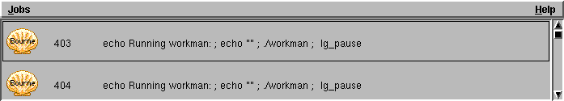
Jobs Opens a small window showing what applications are currently running. You can also terminate any job either by requesting or forcing termination.
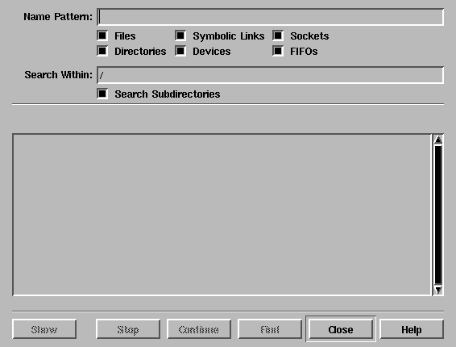
Find> Graphical interface to the find program. Very nice.
Clicking on this button allows one to choose one of three layouts. There are three pre-canned layouts which were shown in LG issue #6.
Terminal Emulator Starts up a Xterm window.
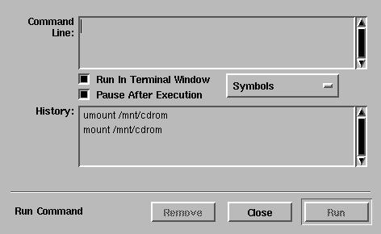
Command line Opens a window and allows you to enter a command line command. Shows a history of previous commands.
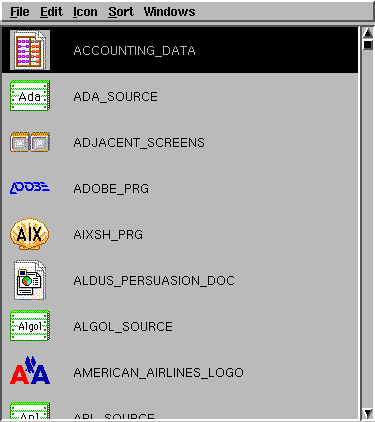
Icon Editor Allows you to create or modify any selected icon. No thoughts on this as I don't mess about with the icons. Shown is the pre-canned icons from Caldera.
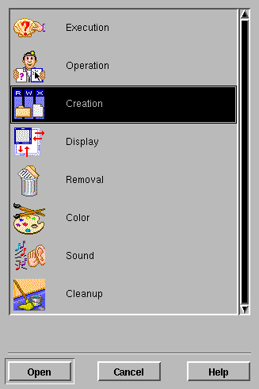
Preferences Brings up a window of objects which you can customize. The behaviour of each object in the figure above can be customized.
ie: 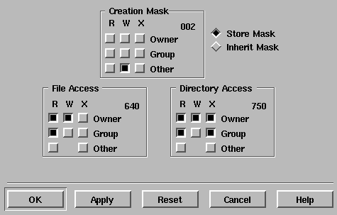 creation option selected.
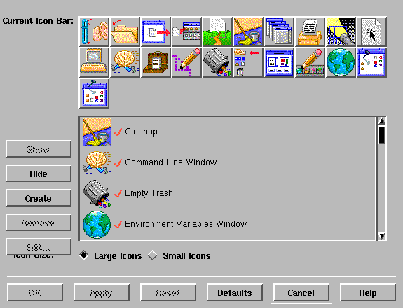
Icon Bar Allows you to add or subtract pre-built icons for display along the top of the main layout window. Here you can add clickable icon shortcuts for common tasks/commands.
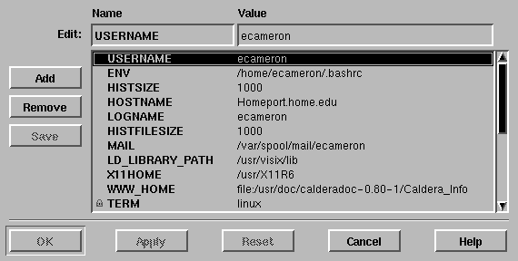
Enviroment Brings up a window showing the enviromental variables of the current user and system wide variables.
Whew! A lota gifs for this section! In case you are wondering, all of the Caldera articles have been written completly within Linux! The graphics, the HTML docs....everything. I only mention this because I've been asked just what can be done with an Unix clone. (Can't be good...nope, just can't be..) Well, I point out the powerful X window system, the multitasking/user parts and then refer them to back issues of the Linux Gazette and Journal. Well, just like sheep, most people shake their heads and return to Windoze.
Ciao bella